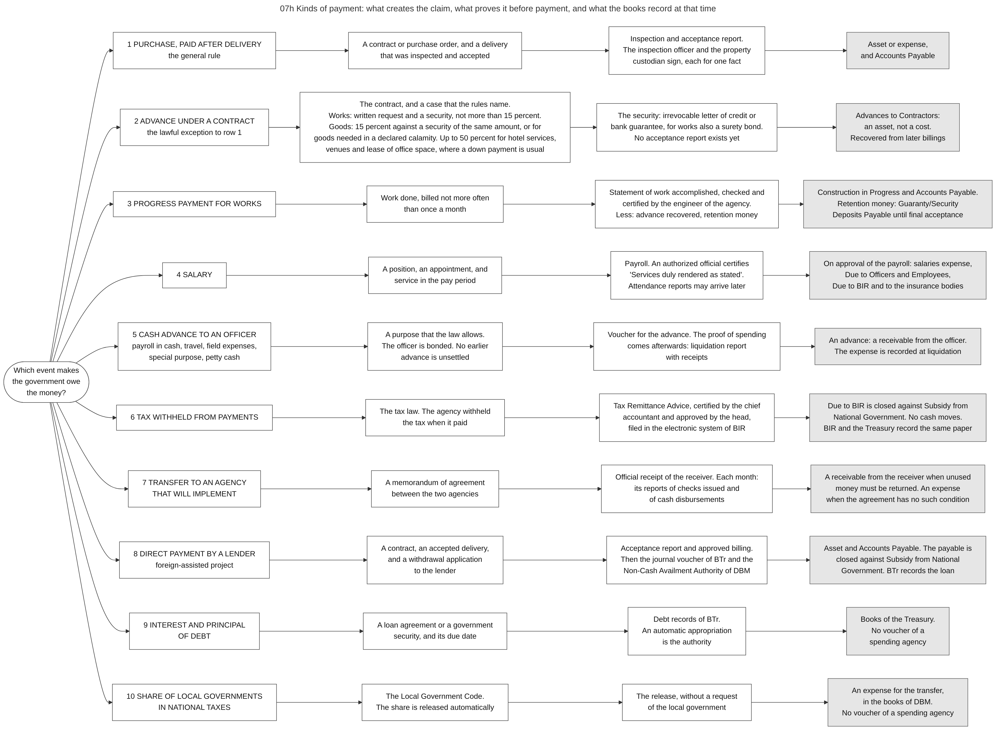

Diagram 07h · Mermaid flowchart
Kinds of payment: what creates the claim, what proves it before payment, and what the books record at that time
Question: A purchase is paid after a contract and an accepted delivery. What replaces these two things in the other kinds of payment, which document proves the claim before the money leaves, and what do the books show at that moment?

What the diagram shows
- Question: a purchase is paid after a contract and an accepted delivery. What replaces these two things in the other kinds of payment, which document proves the claim before the money leaves, and what do the books show at that moment?
- Idea: every payment needs legal authority, cash and records in the same way (diagram 00d). The kinds of payment differ only in the event that makes the government owe the money, and in the document that proves this event. In rows 2 and 5 the money leaves before anything is delivered. The rules then require a security or a bond, and the books record a receivable and not an expense.
- How to read it: each row is one kind of payment. The rows are separate cases, not a sequence. Column 1 = the kind of payment. Column 2 = the event that creates the claim. Column 3 = the document that proves the event, and the officer who states it. Column 4 (grey) = what the books of the agency record at that time.
- Sources: row 1 [PD1445 s.88][GAM-V1 Ch.8 s.15][GAM-V2 App.62]. Row 2 [IRR12009 s.71.1.5, s.71.2.5][GAM-V1 Ch.6 s.57, Ch.10 s.8]. Row 3 [IRR12009 s.71.2.7, s.71.2.8][GAM-V1 Ch.10 s.8]. Row 4 [GAM-V2 App.33][GAM-V1 Ch.6 s.19, s.48, Annex H]. Row 5 [PD1445 s.89][GAM-V1 Ch.6 ss.14-39]. Row 6 [GAM-V1 Ch.5 s.38, Ch.6 ss.60-62]. Row 7 [GAM-V1 Ch.6 s.63][NBC599 s.3.4]. Row 8 [GAM-V1 Ch.6 ss.66-68][NBC599 s.4.2.2.1]. Row 9 [EO292-B6 s.26][EO449]. Row 10 [LGC s.286][ALGU2026][GAM-V1 Ch.5 s.18].
- Not in the diagram: the refund of a tax and cash aid to persons. Their steps are in chapters 10 and 15, and I did not read the rules on their documents.
- Limit: the Manual is of 2015. The accounts and the forms are those of the Manual. The limits on advances, retention and damages are those of the procurement rules of 2025.
Code

---
title: "07h Kinds of payment: what creates the claim, what proves it before payment, and what the books record at that time"
config:
flowchart:
wrappingWidth: 900
---
flowchart LR
%% QUESTION THIS DIAGRAM ANSWERS: a purchase is paid after a contract and an accepted delivery. What replaces these two things in the other kinds of payment, which document proves the claim before the money leaves, and what do the books show at that moment?
%% IDEA: every payment needs legal authority, cash and records in the same way (diagram 00d). The kinds of payment differ only in the event that makes the government owe the money, and in the document that proves this event. In rows 2 and 5 the money leaves before anything is delivered. The rules then require a security or a bond, and the books record a receivable and not an expense.
%% READING: each row is one kind of payment. The rows are separate cases, not a sequence. Column 1 = the kind of payment. Column 2 = the event that creates the claim. Column 3 = the document that proves the event, and the officer who states it. Column 4 (grey) = what the books of the agency record at that time.
%% SOURCES: row 1 [PD1445 s.88][GAM-V1 Ch.8 s.15][GAM-V2 App.62]. Row 2 [IRR12009 s.71.1.5, s.71.2.5][GAM-V1 Ch.6 s.57, Ch.10 s.8]. Row 3 [IRR12009 s.71.2.7, s.71.2.8][GAM-V1 Ch.10 s.8]. Row 4 [GAM-V2 App.33][GAM-V1 Ch.6 s.19, s.48, Annex H]. Row 5 [PD1445 s.89][GAM-V1 Ch.6 ss.14-39]. Row 6 [GAM-V1 Ch.5 s.38, Ch.6 ss.60-62]. Row 7 [GAM-V1 Ch.6 s.63][NBC599 s.3.4]. Row 8 [GAM-V1 Ch.6 ss.66-68][NBC599 s.4.2.2.1]. Row 9 [EO292-B6 s.26][EO449]. Row 10 [LGC s.286][ALGU2026][GAM-V1 Ch.5 s.18].
%% NOT IN THE DIAGRAM: the refund of a tax and cash aid to persons. Their steps are in chapters 10 and 15, and I did not read the rules on their documents.
%% LIMIT: the Manual is of 2015. The accounts and the forms are those of the Manual. The limits on advances, retention and damages are those of the procurement rules of 2025.
S(["Which event makes<br/>the government owe<br/>the money?"])
S --> A1["1 PURCHASE, PAID AFTER DELIVERY<br/>the general rule"] --> A2["A contract or purchase order, and a delivery<br/>that was inspected and accepted"] --> A3["Inspection and acceptance report.<br/>The inspection officer and the property<br/>custodian sign, each for one fact"] --> A4["Asset or expense,<br/>and Accounts Payable"]:::rec
S --> B1["2 ADVANCE UNDER A CONTRACT<br/>the lawful exception to row 1"] --> B2["The contract, and a case that the rules name.<br/>Works: written request and a security, not more than 15 percent.<br/>Goods: 15 percent against a security of the same amount, or for<br/>goods needed in a declared calamity. Up to 50 percent for hotel services,<br/>venues and lease of office space, where a down payment is usual"] --> B3["The security: irrevocable letter of credit or<br/>bank guarantee, for works also a surety bond.<br/>No acceptance report exists yet"] --> B4["Advances to Contractors:<br/>an asset, not a cost.<br/>Recovered from later billings"]:::rec
S --> C1["3 PROGRESS PAYMENT FOR WORKS"] --> C2["Work done, billed not more often<br/>than once a month"] --> C3["Statement of work accomplished, checked and<br/>certified by the engineer of the agency.<br/>Less: advance recovered, retention money"] --> C4["Construction in Progress and Accounts Payable.<br/>Retention money: Guaranty/Security<br/>Deposits Payable until final acceptance"]:::rec
S --> D1["4 SALARY"] --> D2["A position, an appointment, and<br/>service in the pay period"] --> D3["Payroll. An authorized official certifies<br/>'Services duly rendered as stated'.<br/>Attendance reports may arrive later"] --> D4["On approval of the payroll: salaries expense,<br/>Due to Officers and Employees,<br/>Due to BIR and to the insurance bodies"]:::rec
S --> E1["5 CASH ADVANCE TO AN OFFICER<br/>payroll in cash, travel, field expenses,<br/>special purpose, petty cash"] --> E2["A purpose that the law allows.<br/>The officer is bonded. No earlier<br/>advance is unsettled"] --> E3["Voucher for the advance. The proof of spending<br/>comes afterwards: liquidation report<br/>with receipts"] --> E4["An advance: a receivable from the officer.<br/>The expense is recorded at liquidation"]:::rec
S --> F1["6 TAX WITHHELD FROM PAYMENTS"] --> F2["The tax law. The agency withheld<br/>the tax when it paid"] --> F3["Tax Remittance Advice, certified by the chief<br/>accountant and approved by the head,<br/>filed in the electronic system of BIR"] --> F4["Due to BIR is closed against Subsidy from<br/>National Government. No cash moves.<br/>BIR and the Treasury record the same paper"]:::rec
S --> G1["7 TRANSFER TO AN AGENCY<br/>THAT WILL IMPLEMENT"] --> G2["A memorandum of agreement<br/>between the two agencies"] --> G3["Official receipt of the receiver. Each month:<br/>its reports of checks issued and<br/>of cash disbursements"] --> G4["A receivable from the receiver when unused<br/>money must be returned. An expense<br/>when the agreement has no such condition"]:::rec
S --> H1["8 DIRECT PAYMENT BY A LENDER<br/>foreign-assisted project"] --> H2["A contract, an accepted delivery,<br/>and a withdrawal application<br/>to the lender"] --> H3["Acceptance report and approved billing.<br/>Then the journal voucher of BTr and the<br/>Non-Cash Availment Authority of DBM"] --> H4["Asset and Accounts Payable. The payable is<br/>closed against Subsidy from National<br/>Government. BTr records the loan"]:::rec
S --> I1["9 INTEREST AND PRINCIPAL<br/>OF DEBT"] --> I2["A loan agreement or a government<br/>security, and its due date"] --> I3["Debt records of BTr.<br/>An automatic appropriation<br/>is the authority"] --> I4["Books of the Treasury.<br/>No voucher of a<br/>spending agency"]:::rec
S --> J1["10 SHARE OF LOCAL GOVERNMENTS<br/>IN NATIONAL TAXES"] --> J2["The Local Government Code.<br/>The share is released automatically"] --> J3["The release, without a request<br/>of the local government"] --> J4["An expense for the transfer,<br/>in the books of DBM.<br/>No voucher of a spending agency"]:::rec
classDef default fill:#ffffff,stroke:#444444,color:#111
classDef rec fill:#e6e6e6,stroke:#555555,color:#111